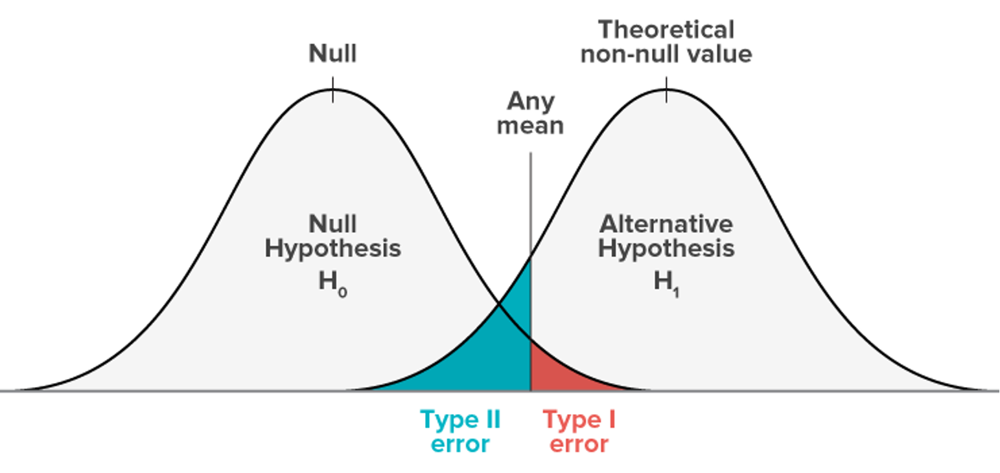

# porqué 0.975 envés de 0.95? por qué el test es de dos colas,
# y el nivel de significancia se divide en dos
qt(0.975, 18) [1] 2.100922# valor crítico!El objetivo principal de la estadística es hacer inferencias sobre poblaciones a partir de muestras.
El objetivo es decidir, basado en una muestra de la población, si existe evidencia suficiente para rechazar la hipótesis nula.
Normalmente, un test de hipótesis se especifica en base a un estadístico (ej., Z, t, F). Es decir, una función que determina un valor dada la muestra de datos sobre la H_0. Todo test se hace en base a H_0.
El procedimiento de un test de hipótesis debe especificar:
Los valores para los cuales el test de hipótesis se rechaza se denomina región de rechazo o región crítica. El complemento de esta región se denomina región de aceptación.
Colas
Normalmente existen dos tipos de test de hipótesis, de una cola y de dos colas.
La probabilidad de rechazar H_0 se conoce como nivel de significancia (significance level), y se denota con la letra griega alfa. Ej., \alpha = 0.05 (5%)
El valor del estadígrafo utilizado en el test (ej., Z, t, F) correspondiente a α se conoce como valor crítico (critical value)
Error Tipo 1
Es muy importante darse cuenta de que una hipótesis nula verdadera en ocasiones será rechazada. Además, este error se cometerá con una frecuencia de \alpha (e.g. \alpha = 0.05)
El rechazo de una hipótesis nula cuando en realidad es verdadera es lo que se conoce como Error Tipo 1
Error Tipo 2
The probability of not rejecting th null hypothesis when it in fact false is represented by \beta Error Tipo 2
La potencia de una prueba estadística se define como 1-\beta
Conculsión de los Errores

Determinar la región crítica basado en un valor \alpha solo podemos tomar una decisión binaria sobre la hipótesis, sin info. suficiente para “rechazar” o “aceptar” H_0.
Dado un estadístico W_{(X)}, el p-valor de un test de hipótesis es la probabilidad de obtener un resultado igual o más extremo que el estadístico observado W(x)=w, asumiendo H_0 como verdad.

Un p-valor bajo => que es muy poco probable haber obtenido W_{(x)} (ej., p < 0.05 … no hay evidencia suficiente para aceptar …(se rechaza)… H_0).
Un p-valor alto => que es muy probable haber obtenido W_{(x)} (ej., p > 0.05 … se acepta H_0)
Comparar dos medias
¿Qué probabilidad hay de que nuestras dos medias muestrales procedan de dos poblaciones con la misma media?
Si esta probabilidad es muy baja (digamos, menos del 5% o menos del 1%), entonces podemos estar razonablemente seguros (95% o 99% en estos dos ejemplos) de que las medias son realmente diferentes entre sí.
OJO!: hay que tener en cuenta que nunca podemos estar seguros al 100%; la diferencia aparente podría deberse simplemente a un muestreo aleatorio, es decir, que hemos obtenido muchos valores bajos en una muestra y muchos valores altos en la otra (error de diseño muestral)
t Student:
Ejemplo: Ver si las medias de dos muestras de datos de n=20 difieren:
# porqué 0.975 envés de 0.95? por qué el test es de dos colas,
# y el nivel de significancia se divide en dos
qt(0.975, 18) [1] 2.100922# valor crítico!Esto significa que nuestro estadístico t de prueba tiene que ser mayor que 2,1 (valor crítico) para rechazar la hipótesis nula y, por tanto concluir que las dos medias son significativamente diferentes a α = 0,05.
t.test(gardenA, gardenB)En R:
boxplot(A, B, notch=TRUE, xlab="Garden", ylab="Ozone")Visualmente las muescas no se sobrelapan, se podría concluir que las medias de las dos distribuciones son significativamente diferentes al nivel de 5%